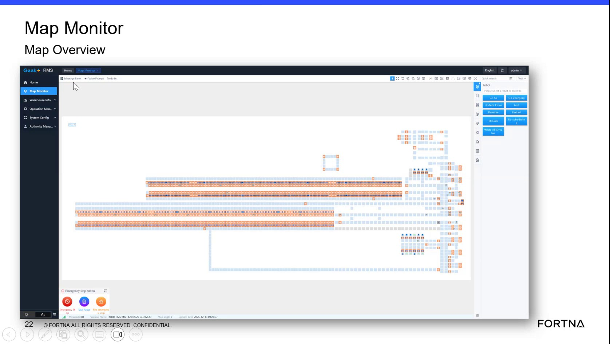

| Procedure ID | proc_locate_map_overview_right_side_information_panel_v1 |
|---|---|
| Title | Locate the Map Overview Right-Side Information Panel |
| Procedure Type | reference |
| Primary Role | operator |
| Support Safe | Yes |
| Validation Status | needs_sme_review |
| Merge Status | source_finalized |
Identify the right-side panel on the Map Overview screen as the area that provides additional information beyond the main map display.
Use this reference when orienting a user to the Map Overview screen layout and when identifying where additional information is displayed on the right side of the screen.
Responsible role: operator
Instruction:
Open or view the Map Overview screen shown in the training material.
Expected result:
The Map Overview screen is visible.
Screens / Images:

Stop or Escalate If:
Responsible role: operator
Instruction:
Look to the right side of the screen and identify the right-side panel referenced by the presenter.
Expected result:
The right-side panel is visually identified on the screen.
Screens / Images:
Stop or Escalate If:
Responsible role: operator
Instruction:
Use the identified right-side panel as the information area that provides additional details beyond the main map display.
Expected result:
The user understands that the right-side panel is where additional information is presented.
Screens / Images:
Stop or Escalate If:
Responsible role: operator
Instruction:
If needed, compare the overall map area to the right-side panel to distinguish the map-style interface from the information panel.
Expected result:
The user can distinguish the main map display from the right-side information panel.
Screens / Images:
Stop or Escalate If: